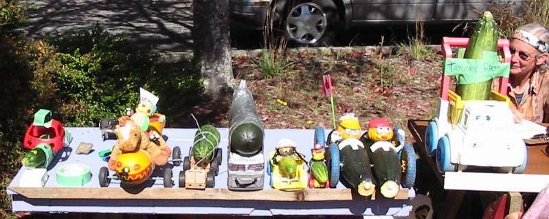
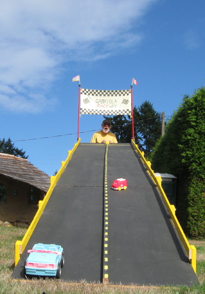
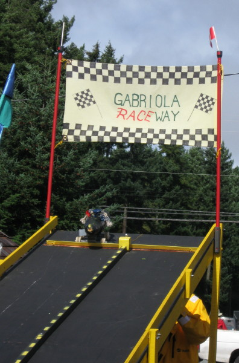

This website will introduce you to the details of the Great Gabriola Squash Race at the Gabriola Fall Fair,
When: Registration/Construction 12:30-1:30 p.m.
Race commences: 1:30 p.m.
Where: Gabriola Commons
Requirements: A squash and wheels
*** The following is very important! ***
Maximum wheelbase: 40cm (16") long
Maximum vehicle width: 46cm (18") wide
=== anything bigger than that will not fit on the track ===
Awards will be presented for "Fastest Squash," "Best Dressed Squash" and "Worst Crash."
Got wheels and no squash? We have a few squash.
Too many squash in your garden? Bring them along.
Take a look at the photos below for ideas

display of contestants

24 foot downhill race track

the starting gate